vignettes/HumanFibrosis.rmd
HumanFibrosis.rmdHere, we demonstrate the usage of CrossTalkeR on the case study Myelofibrosis scRNA-seq data set from the paper. The predicted ligand-receptor interactions used in this tutorial are provided within this package. These differ sightly from the results presented in the paper, since they were recomputed using the cellphoneDB Method with the liana package and the consensus interaction database.
The scRNA-seq data contains two conditions: control (CTR_LR.csv) and disease condition (EXP_LR.csv). We first show how to run liana to retrieve ligand and receptor activities, then how to execute CrossTalkeR and finally go over some of the results, that are also provided inside the resulting CrossTalkeR report.
For the prediction of ligand-receptor interactions, we use the python version of the package liana. This package provides different methods and databases for the analysis of intercellular interactions based on scRNA-seq data in the AnnData format. In this Tutorial, we describe our recommendation for using the liana package in python.
First of all, the libraries necessary for using liana must be loaded:
import scanpy as sc
import liana as li
import pandas as pd
import osWe assume here that the necessary libraries are already installed.
Then, before perfoming the analysis, we need to load the AnnData object with the scRNA-seq data
data = sc.read_h5ad("/path/to/AnnData/file.h5ad")
data.raw = dataAs mentioned at the beginning, there are different methods and databases implemented in the liana package. We recommend using the CellphoneDB analysis in combination with the consensus database with intercellular interactions. Note that metadata fields for the available sample/conditions (field_with_condition) and for the cell annotations (field_with_cell_annotation) are still specified by the user.
for i in set(data.obs['field_with_condition']):
print(i)
lr=li.method.cellphonedb(data[data.obs['field_with_condition']==i],
groupby='field_with_cell_annotation',
expr_prop=0.1,
verbose=True,
resource_name='consensus',
inplace=False)
lr.to_csv(f"{i}_lr_liana_consensus_unfiltered.csv")Finally, the result tables are filtered by the CellphoneDB p-value (here in the example p-val < 0.05) and converted into the CrossTalkeR input format. By default, the interaction table used for CrossTalkeR should contain the columns “source”, “target”, “type_gene_A”, “gene_A”, “type_gene_B”, “gene_B” and “MeanLR”.
data = {}
for i in os.listdir():
if i.endswith('lr_liana_consensus_unfiltered.csv'):
evfull = pd.read_csv(i)
evfull = evfull.loc[:,['ligand','receptor','source','target','lr_means','cellphone_pvals']]
evfull['type_gene_A'] = 'Ligand'
evfull['type_gene_B'] = 'Receptor'
evfull['gene_A'] = evfull['ligand']
evfull['gene_B'] = evfull['receptor']
evfull['MeanLR'] = evfull['lr_means']
evfull = evfull.loc[list(evfull.cellphone_pvals.to_numpy()<=0.05),:]
evfull.loc[:, ['source', 'target', 'type_gene_A', 'type_gene_B', 'gene_A', 'gene_B', 'MeanLR']].to_csv(f'{k}_lr_ready.csv')
k=i[0:i.find('_lr_')]
data[k]=os.path.abspath(f'{k}_lr_ready.csv')First, we need to import the CrossTalkeR package and define a named list of either the paths to the Ligand-Receptor interaction tables, or directly dataframe objects for each condition of interest. Please note that it is possible to run CrossTalkeR with more than two conditions. Here we load the files from within the package. We can further define a path where we like to save our results (output) and run CrossTalkeR with the generate_report() function:
library(CrossTalkeR)
library(igraph)
library(stringr)
paths <- c('CTR' = system.file("extdata",
"CTR_LR.csv",
package = "CrossTalkeR"),
'EXP' = system.file("extdata",
"EXP_LR.csv",
package = "CrossTalkeR"))
output <- system.file("extdata", package = "CrossTalkeR")
data <- generate_report(paths,
out_path=paste0(output,'/'),
out_file = 'vignettes_example.html',
output_fmt = "html_document",
report = TRUE)Besides passing the paths to the interaction tables and the output folder, we here also define: out_file - A suffix for the result reports output_fmt - The file type of the result reports report - A boolean value if the reports should be created at all
As result of the successful execution, we receive three seurat objects (LR_data.Rds, LR_data_step2.Rds and LR_data_final.Rds), as well as two html-reports(SingleCondition.html and ComparativeCondition.html). The LR_data_final.Rds contains all results produced by CrossTalkeR and the two html-reports contain the visualization of the results inside the R object. It is possible to load the results of the CrossTalkeR analysis from the “LR_data_final.Rds” R-object and produce the plots separately. In the following we are going to take a look at different results within the two reports, step by step.
The first report contains the results for each analysed condition considered separately. In our case in each section is a plot for the control condition (CTR) and the disease condition (EXP). There are two main sections in the report. The first one only deals with cell-cell-interactions and the second with cell-gene-interactions, which here means an analysis at the ligand and receptor gene level.
The cell-cell-interaction (CCI) graph plots focus on the interactions between the different cell types within the data. We focus on three measures inside this plot:
After loading the result data from the “LR_data_final.Rds”, we can plot the cell-cell interactions with the plot_cci() function. Here we show a plot for each analysed condition:
data <- readRDS(system.file("extdata", "LR_data_final.Rds", package = "CrossTalkeR"))
p1 <- plot_cci(graph = data@graphs$CTR,
colors = data@colors,
plt_name = 'Control',
coords = data@coords[V(data@graphs$CTR)$name,],
emax = NULL,
leg = FALSE,
low = 0,
high = 0,
ignore_alpha = FALSE,
log = FALSE,
efactor = 8,
vfactor = 12,
pg = data@rankings[["CTR"]]$Pagerank)
p2 <- plot_cci(graph = data@graphs$EXP,
colors = data@colors,
plt_name = 'Disease',
coords = data@coords[V(data@graphs$EXP)$name,],
emax = NULL,
leg = FALSE,
low = 0,
high = 0,
ignore_alpha = FALSE,
log = FALSE,
efactor = 8,
vfactor = 12,
pg = data@rankings[["EXP"]]$Pagerank)
print(p1+p2)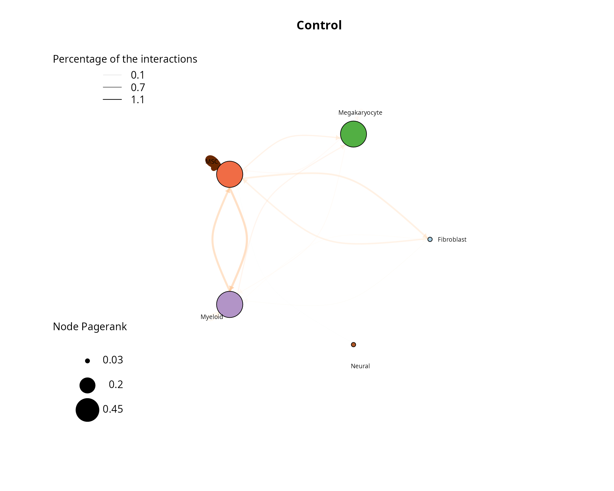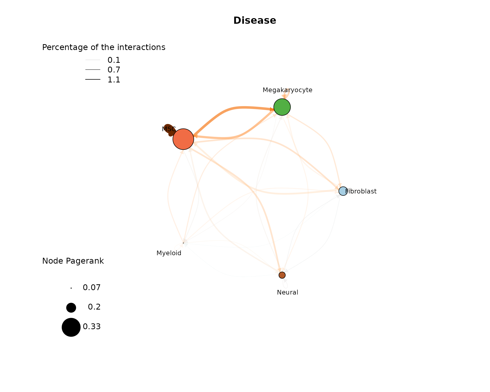
In the control plot we can see that a high proportion of interactions are MSCs talking with themselves as well as MSC and Fibroblasts talking with each other. These interaction have also a higher weight, as can be seen by the edge color. The most important node by pagerank is the MSC node. When analysing the plot of the disease condition, we see again a high proportions of interactions are self-talking MSCs and the most important node by pagerank is again the MSC node. Here the MSC are talking more to Megakaryocytes. To really compare the two conditions we recommend using the Comparative report results.
We provide several different possibilities to analyse the ligand-receptor interactions on the gene level. In CrossTalkeR, topological network measures are calculated for each node(gene) in the build networks. These measures include Influencer (depending on outgoing edges), Listener(depending on incoming edges), Mediator (depending on outgoing and incoming edges), and Pagerank (overall importance) rankings. The ligand and receptors can be ranked by these measures and we can identify possibly relevant genes by considering the top genes of the rankings. In the report we provide an interactive table with all the rankings for each gene in the network. Here is an example for the top 10 genes in the Pagerank ranking for both preset conditions in form of Barplots:
rankings_table <- data@rankings$CTR_ggi %>%
arrange(Pagerank)
rankings_table <- tail(rankings_table, n=10)
signal <- ifelse(rankings_table$Pagerank < 0, 'negative', 'positive')
p1 <- ggplot(rankings_table, aes(x = Pagerank, y = reorder(nodes, Pagerank), fill = signal)) +
geom_bar(stat = "identity") +
scale_fill_manual(values = c(Blue2DarkOrange18Steps[14])) +
theme_minimal() +
ggtitle("Top Listener in Control Condition")
rankings_table <- data@rankings$EXP_ggi %>%
arrange(Pagerank)
rankings_table <- tail(rankings_table, n=10)
signal <- ifelse(rankings_table$Pagerank < 0, 'negative', 'positive')
p2 <- ggplot(rankings_table, aes(x = Pagerank, y = reorder(nodes, Pagerank), fill = signal)) +
scale_fill_manual(values = c(Blue2DarkOrange18Steps[14])) +
geom_bar(stat = "identity") +
theme_minimal() +
ggtitle("Top Listener in Disease Condition")
print(p1+p2)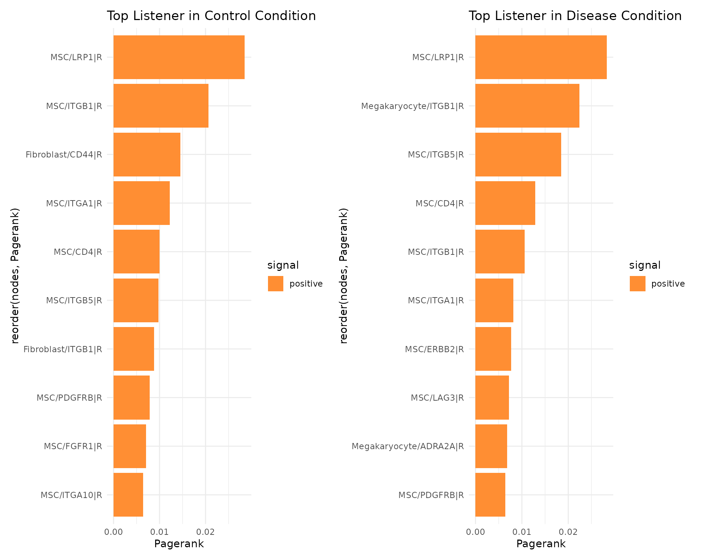
We perform further analysis on the gene-gene interaction level like a principal component analysis (PCA), but we focus on the result of these more in the condition comparison results described in the next section.
CrossTalkeR not only analyzes the conditions individually but also calculates the differences in the cell-cell interactions between the conditions. The results of these analyses are presented in the comparative report. In our example we compare the disease (EXP) against the control (CTR) condition.
As before for the single condition results, the first part of the results deal with cell-cell interactions. Here we show again the CCI graph plot, but now for the compared conditions:
plot_cci(graph = data@graphs$EXP_x_CTR,
colors = data@colors,
plt_name = 'Disease vs Control',
coords = data@coords[V(data@graphs$EXP_x_CTR)$name,],
emax = NULL,
leg = FALSE,
low = 0,
high = 0,
ignore_alpha = FALSE,
log = FALSE,
efactor = 8,
vfactor = 12, pg = data@rankings[["EXP_x_CTR"]]$Pagerank)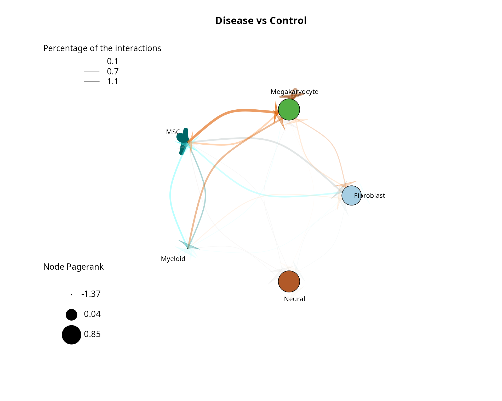
EnhancedVolcano(data@stats$EXP_x_CTR, lab=data@stats$EXP_x_CTR$columns_name,x='lodds',y='p',pCutoff=0.05)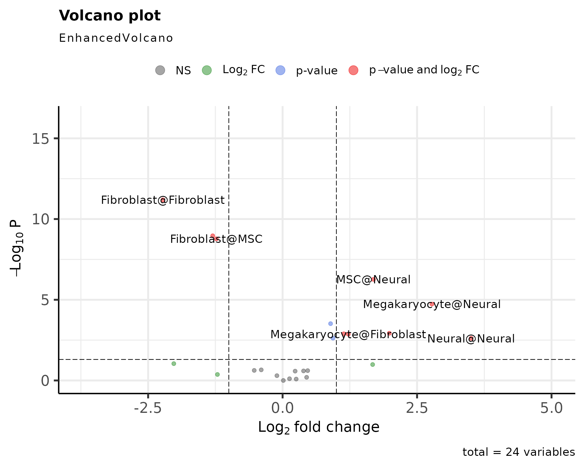
The main difference from the previous CCI graph plots is that the edge weights can now be not only positive but also negative, as well as the Pagerank values of the nodes. Positive values mean that these interactions between cell types have a higher activity/importance in the EXP condition, while negative values indicate a lower activity/importannce in the EXP condition (higher in CTR). As we can see in the CCI plot above, negative edge weights dominate here, especially in MSC-MSC, MSC-Fibroblast, and Fibroblast-MSC interactions. Thus, we can conclude that these interactions are stronger in the CTR condition. A counterexample of this is the Megakaryocyte-MSC interaction, where we can see from the opaqueness that these interactions only account for a smaller proportion.
Since we have created a CCI network we can also analyze it based on topological properties to identify possible biologically relevant processes. For this purpose, the same topological measures can be used that were already used in the single condition report for gene-cell interactions analysis (Influencer, Listener, Mediator, Pagerank). As before, we can look at the rankings individually in the form of bar plots. Here is an example for the Pagerank of cell types in the network:
for(i in 2:length(names(data@rankings))){
curr <- names(data@rankings)[i]
if(str_detect(curr, '_x_', negate = FALSE) & !str_detect(curr, 'ggi', negate = FALSE)){
signal <- ifelse(data@rankings[[curr]]$Pagerank < 0, 'negative','positive')
print(ggplot(data@rankings[[curr]], aes(x=Pagerank,y=reorder(nodes,Pagerank),fill=signal))+
geom_bar(stat="identity")+
scale_fill_manual(values = c(Blue2DarkOrange18Steps[4],Blue2DarkOrange18Steps[14]))+
theme_minimal())
}
}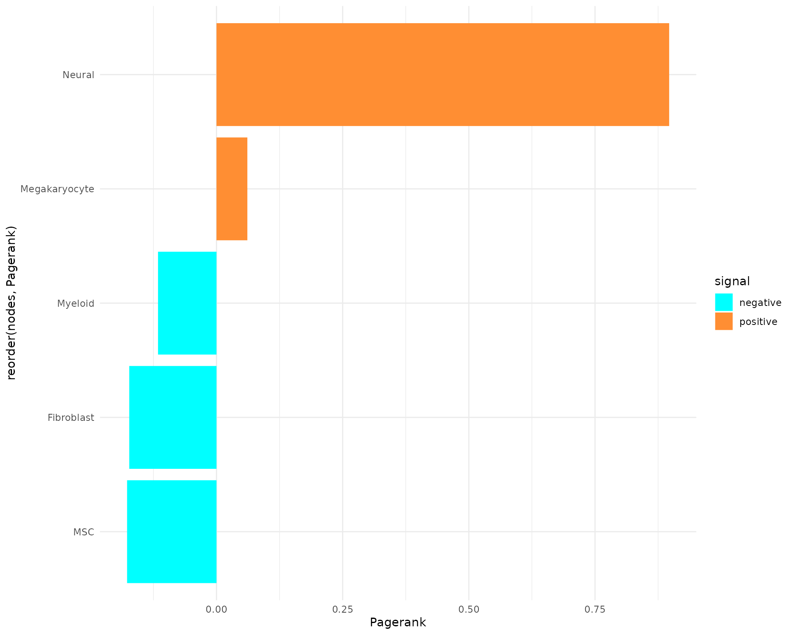
In our comparison, the Neural cells have the highest pagerank, which suggest a high importance in our network for the EXP condition. In the negative direction, MSC and Fibroblast cells have a similar low Pagerank. This suggest a higher importance in CTR condition.
A further analysis step is to perform a PCA on the already calculated topological measures. The results of the PCA can be found in the form of a 2D plot in the report. Here we show the first two dimensions of the PCA:
print(plot_pca_LR_comparative(data,
"EXP_x_CTR",
dims=c(1,2),
ret=T,
ggi=FALSE))
In the plot, we indicate the direction of the topological measure by labeled arrows. This serves to facilitate the interpretation of the results of the PCA. We can see from the plot that the Myeloid cells take the role of a mediator and also that the Neural cells have a high pagerank as well as Listener ranking in the EXP condition. On the contrary, MSCs and Fibroblasts have a low Listener rank and Pagerank in the EXP condition, which fits the results from the bar chart. In this case, we cannot extract any information about the Influencer, as this ranking could not be indicated in the two dimensions shown (no arrow present in the PCA plot). Here we would suggest plotting the Influencer rankings as a bar plot:
for(i in 2:length(names(data@rankings))){
curr <- names(data@rankings)[i]
if(str_detect(curr, '_x_', negate = FALSE) & !str_detect(curr, 'ggi', negate = FALSE)){
signal <- ifelse(data@rankings[[curr]]$Influencer < 0, 'negative','positive')
print(ggplot(data@rankings[[curr]], aes(x=Influencer,y=reorder(nodes,Influencer),fill=signal))+
geom_bar(stat="identity")+
scale_fill_manual(values = c(Blue2DarkOrange18Steps[4],Blue2DarkOrange18Steps[14]))+
theme_minimal())
}
}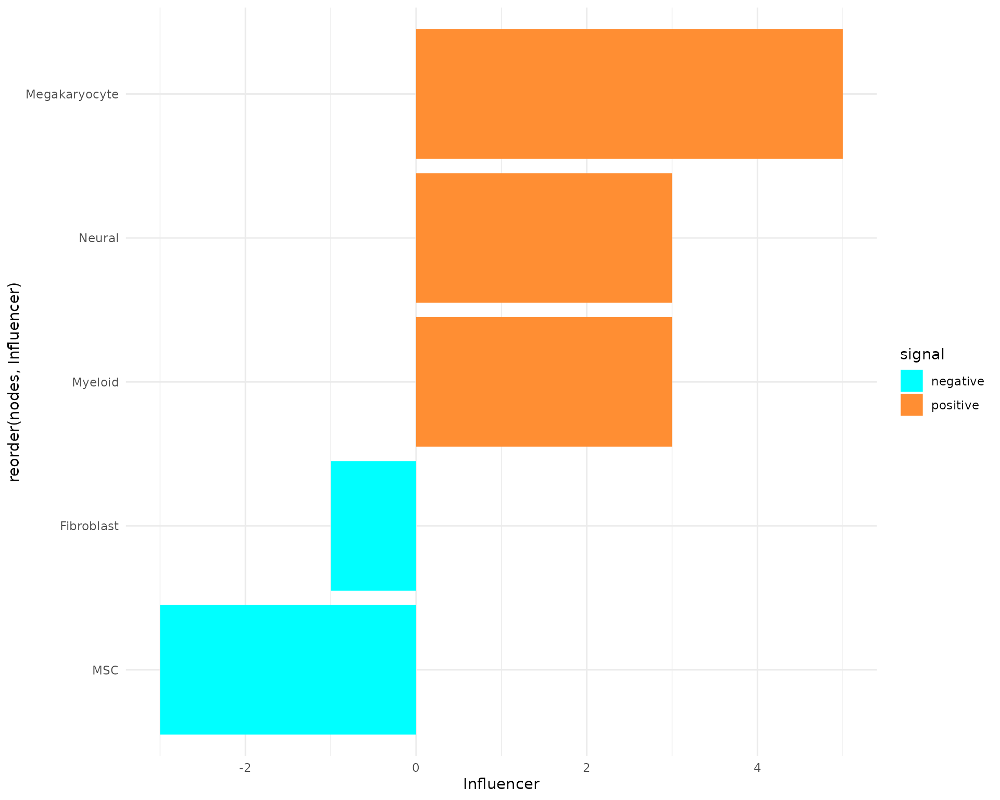
Now we can identify the Megakaryocytes as a influencing celltype in the EXP condition and the MSC in the CTR condition.
The second part of the report deals again with the interactions on the gene level. Here, the procedure is similar to the one described in the last section for the cell-cell interactions and the analysis performed for the single conditions. First of all, we can look at the results of the topological rankings in the form of bar plots, again using the example of the pagerank:
all_data <- data
for (i in 2:length(names(all_data@rankings))) {
curr <- names(all_data@rankings)[i]
if (str_detect(curr, '_x_', negate = FALSE) & str_detect(curr, 'ggi', negate = FALSE)) {
tmp <- top_n(all_data@rankings[[curr]], 20, abs(.data$Pagerank))
signal <- ifelse(tmp$Pagerank < 0, 'negative', 'positive')
print(ggplot(tmp, aes(x = Pagerank, y = reorder(nodes, Pagerank), fill = signal)) +
geom_bar(stat = "identity") +
scale_fill_manual(values = c(Blue2DarkOrange18Steps[4], Blue2DarkOrange18Steps[14])) +
theme_minimal())
}
}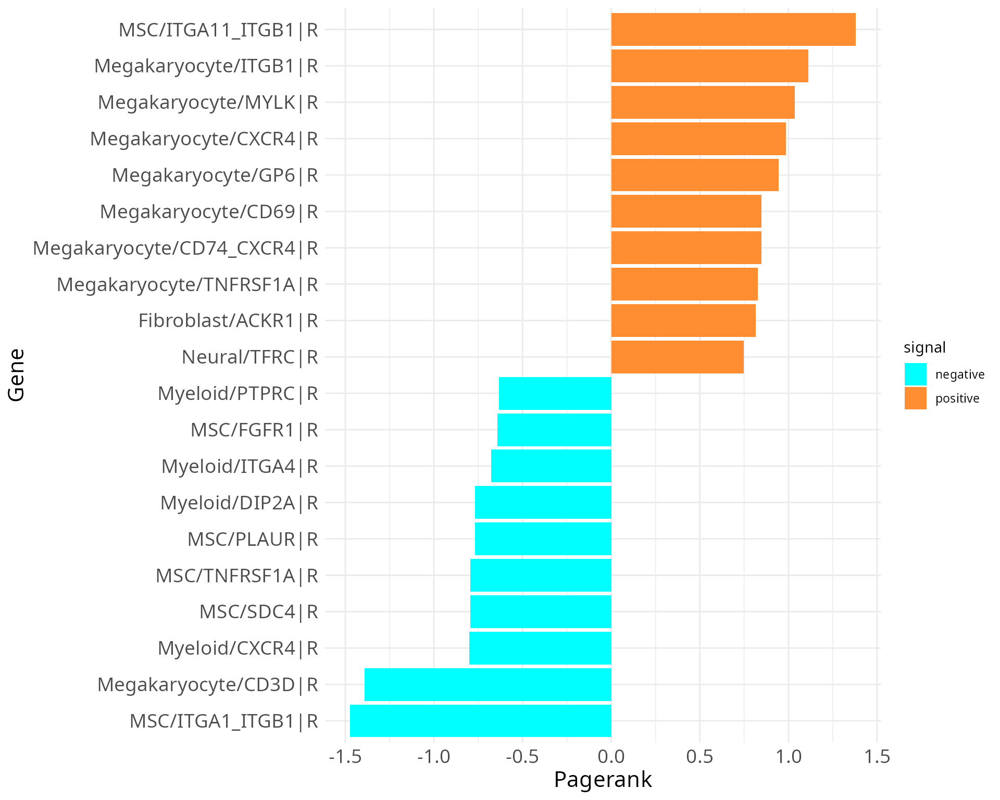
The plot gives us information about which ligand and receptor genes play a more important role in which condition. In our case, the top genes in both, positive and negative, directions are all receptor genes. The ITGB1 receptor in Megakaryocytes has a high importance for the EXP condition, followed by genes like ERBB2 and LAG3 in MSCs. Since the receptor CD44 in Fibroblast has a high negative value here, it means that it is more important in the CTR condition. Thus, we can identify first interesting genes for possible further analysis. We can follow up on this again with analysing the results of the PCA performed on the topological measures at the gene level:
print(plot_pca_LR_comparative(data,
"EXP_x_CTR_ggi",
dims = c(1, 2),
ret = T,
ggi = TRUE,
include_tf = FALSE))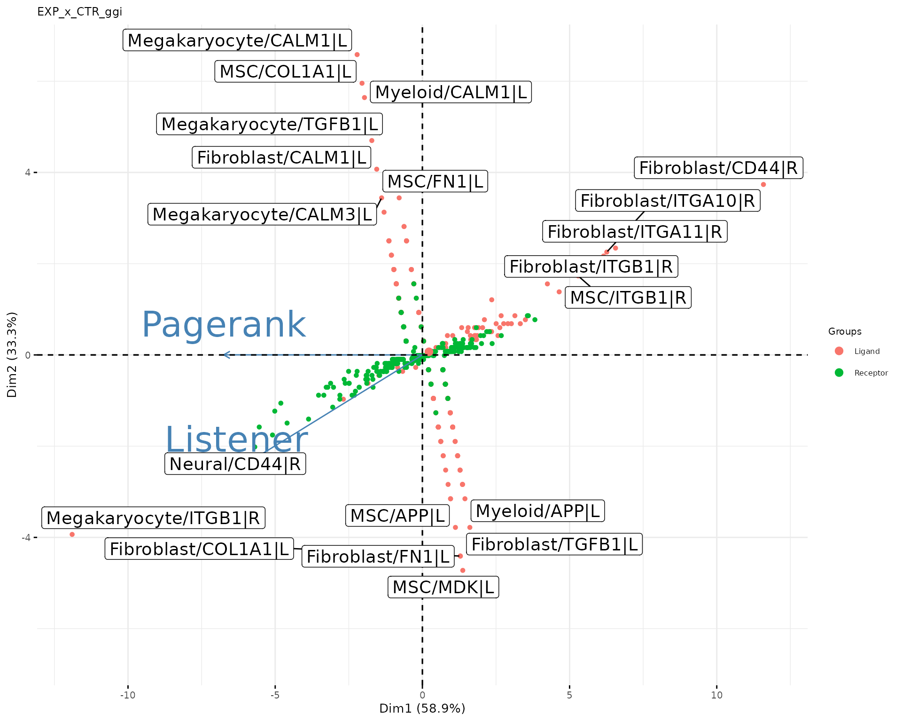
Our PCA results now contain receptor and ligand genes, identified as important outliers. First, we find the receptor genes ITGB1 in Megakaryocytes and CD44 in Fibroblast, which have been identified as important before. Besides a high Pagerank, these two genes also have a high Listener rank. In addition, the ligand genes CALM1 in Megakaryocytes and Myeloid cells, COL1A1 in MSCs and TGFB1 in Megakaryocytes can be identified as important Influencers in the EXP condition. Interesting is also, that the ligand gene TGFB1 is also important for the CTR condition in Fibroblasts. So this is also an interesting candidate gene, especially since this is a known driver in fibrosis or cancer resulted disease.
Important note: As some might have noticed, there is no arrow indicating genes with the function of a Mediator. In the case of ligand-receptor interactions we will not have any Mediator genes since we are only considering pairwise interactions. This is also caused by the fact, that we distinguish the biological function of every gene by assigning them to their in the database annotated role (either receptor or ligand).
Since we got a first impression of the data with the previous results, we can further deepen the analysis. For example, we had TGFB1 in Megakaryocytes and Fibroblasts, CD44 in Fibroblasts and ITGB1 in Megakaryocytes as interesting genes. With CrossTalkeR, we can look even more closely at the interactions involving these genes using Sanley plots. There are two ways to do this. First, we can regenerate the report again, this time passing a list of genes of interest:
genes_of_interest <- c('TGFB1|L',
'CD44|R',
'ITGB1|R')
data <- make_report(out_path=output,
genes = genes_of_interest,
out_file = 'vignettes_example.html',
output_fmt = "html_document",
report = TRUE,
org = "hsa")The second option is to plot only the Sankey plots for the genes of interests, without redoing the report:
plot_sankey(data@tables$EXP_x_CTR,
target = "TGFB1|L",
ligand_cluster = NULL,
receptor_cluster = NULL,
plt_name = "TGFB1 ligand gene interactions EXP vs CTR",
threshold = 50, tfflag = FALSE)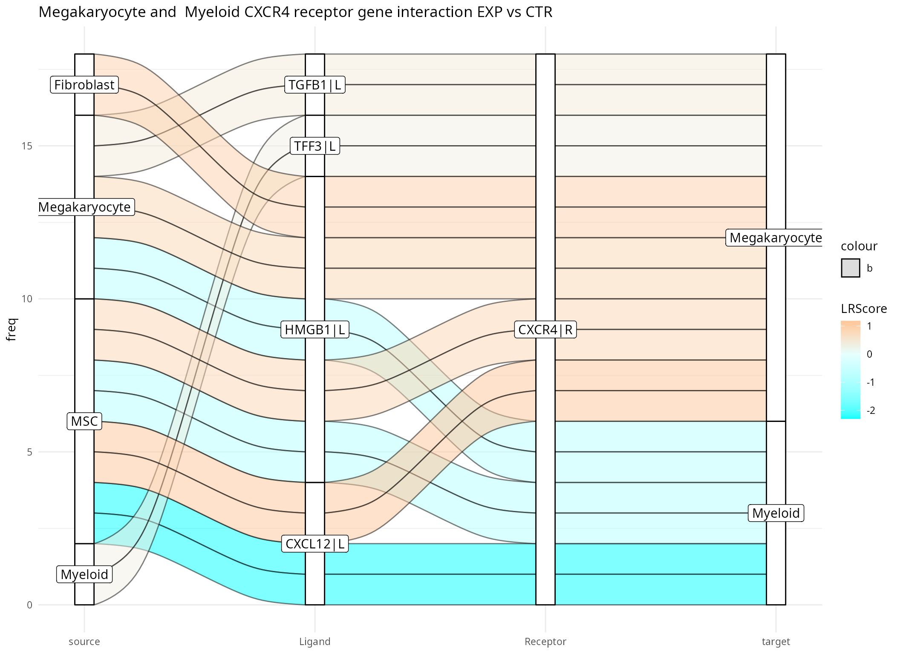
In the Sankey plot, not all interactions involving the TGFB1 ligand gene are shown, but only those with a high score. The number of actual interactions can be controlled with the threshold parameter. In the example above 50 interactions are selected. Since we have only entered one target gene without any further information, we can now also see interactions originating from different cell types, here Fibroblasts, Megakaryocytes and MSCs. Furthermore, we now have a list of receptors with associated cell types with which the TGFB1 ligand can possibly interact. The list also includes the receptor ITGB1 in Megakaryocytes, which was also a gene of interest. The interaction between TGFB1 and ITGB1 has a positive score, which means it is enriched in the EXP condition.
The third gene of interest was the receptor gene CD44 with a high importance in Fibroblast. If we want to focus only on CD44 in Fibroblast, we can define a receptor_cluster value when running the Sankey plot function. Also, the number of interactions included is reduced by setting the threshold parameter to 15.
plot_sankey(data@tables$EXP_x_CTR,
target = "CD44|R",
ligand_cluster = NULL,
receptor_cluster = "Fibroblast",
plt_name = "Fibroblast CD44 receptor gene interaction EXP vs CTR",
threshold = 15, tfflag = FALSE)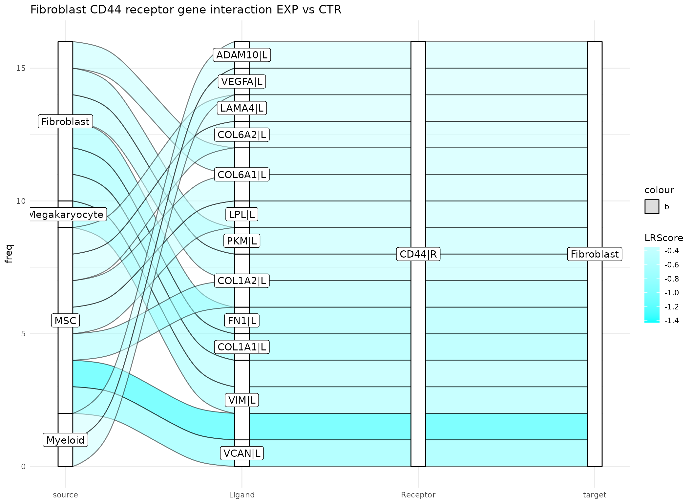
Here, the top 15 interactions have a negative weight, meaning these are all more relevant for the CTR condition. An interesting interaction is the Fibroblast COL1A1 with CD44, since COL1A1 also came up in th PCA plot as a high ranked Influencer in the CTR condition.
If you want to learn more about how to infer ligand and receptor interactions with liana and how to use it with CrossTalkeR, check out this tutorial: Run liana.